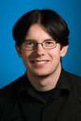

Tickets and funding
EHSM is entirely supported by its attendees and donors. To help us make this event happen, please donate and/or order your ticket as soon as possible. EHSM is a non-profit event and most of the money will be used to cover speakers' travel expenses.
They are already coming
To give you an idea of what is coming up, we are pleased to announce that the following speakers will be presenting their awesome work:
 | Daniela Schiffer and Markus Schulz will present their startup Changers, the solar charger they have developed and the vision behind what they are doing. Imagine what would happen if every single one of us could produce their own energy and by that creating a currency. Even though Changers' particular business model is not compatible with open source, their story is an inspiring example of how persistence and willingness to leave the beaten path can lead to the successful design and production of consumer electronics in a startup environment. |
 | Mitch Altman will give a hands-on soldering workshop for kids and other newcomers. Learn how to solder by building a simple and fun electronic kit! Minors (-18) get into EHSM for free, kits cost 10€. |
 | |
|  | Harald Welte will present the Osmocom project he founded. In particular, there will be OsmocomBB, a free software GSM stack evolved enough to actually make phone calls and send SMS (plus all the possible explorations of the GSM system), and OsmoSDR, a small-size, low-cost software defined radio device. |
 | Last year, CERN launched a new open hardware license. Evangelia Gousiou will tell you about this endeavour which was created to govern the use, copying, modification and distribution of hardware design documentation and the manufacture and distribution of products in the spirit of knowledge and technology dissemination. For the more technically-minded, she will also present the White Rabbit, an open hardware and software Ethernet-based system to synchronize ~1000 nodes with sub-nanosecond accuracy over fiber and copper lengths of up to 10 km. |
 | Nadania Idriss is a California transplant who founded Berlin Glas e.V. in 2009. The studio is the first in Berlin to offer hot glass for artists and the general public. Check out her short presentation to learn how you too can work with this material! (glass blowing etc.) |
 | Jasper Nance will present her Microsecond High Speed Photography and Scanning Electron Microscope projects from the perspective of using community resources, specifically those from Heatsync Labs, Arizona's first hackerspace. This includes materials, people, expertise, and crowdsourcing to scrounge and hack together technologically challenging endeavours. The projects are not an end in themselves, but rather serve as hackable platforms for both community and educational outreach to teach skills and develop new and hackable ways of doing difficult and expensive tasks. For a quick glimpse at Jasper's projects, be sure to check her impressive photo portfolio. |
 | An anonymous woman who goes by the handle of "bionerd23" will give you a very comprehensive, bottom-up view of man-made and natural nuclear radiation and how you can detect it. Mind you - when we say "comprehensive", this means things like building yourself ion chambers for detecting radiation, and studying and operating a small-scale homemade fusion reactor. Have a look at her excellent videos. |
 | Jeffrey Gough will talk about and demonstrate metalwork techniques. How to go beyond extruded ABS coming from a 3D printer? There might even be a hands-on workshop coming up, stay tuned. |
 | Shawn Tan has been working on a new open source microprocessor design and will introduce it at EHSM. |
 | Ben Krasnow makes all sorts of seemingly impossible science experiments at home, such as creating aerogel (yes, that thing on spacecraft), Pop Rocks candy, or building a scanning electron microscope. One of his latest hacks is to make X-rays by unrolling Scotch tape. He will talk about a yet undisclosed but promising topic. |
More speakers will be announced as we confirm them, check this space!
EHSM venue
TU Berlin, Hörsaalgebäude Elektrotechnik
Lecture room HE101
Straße des 17. Juni 136
10623 Berlin, Germany
U Bahn: Ernst-Reuter-Platz